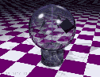

Original by Philip Gibbs, 1996, 1997.

When sunlight falls on the light-mill, the vanes turn with the black surfaces apparently being pushed on by the light. Crookes at first believed this demonstrated that light radiation pressure on the black vanes was turning it around, just like water in a water mill. His paper reporting the device was refereed by James Clerk Maxwell, who accepted the explanation Crookes gave. It seems that Maxwell was delighted to see a demonstration of the effect of radiation pressure as predicted by his theory of electromagnetism. But there is a problem with this explanation. Light falling on the black side should be absorbed, while light falling on the silver side of the vanes should be reflected. The nett result is that there is twice as much radiation pressure on the metal side as on the black. In that case the mill is turning the wrong way.
When this was realised, other explanations for the radiometer effect were sought, and some that people came up with are still mistakenly quoted as correct. It was clear that the black side of each vane would absorb heat from infrared radiation more than the silver side. This would cause the rarefied gas to be heated on the black side. In that case, the obvious explanation is that the pressure of the gas on the darker side increases with its temperature, creating a higher force on the dark side of the vane which thus pushes the rotor around. Maxwell analysed this theory carefully—presumably being wary about making a second mistake. He discovered that, in fact, the warmer gas would simply expand in such a way that no nett force would result from this effect, just a steady flow of heat across the vanes. So this explanation in terms of warm gas is wrong, but even the Encyclopaedia Britannica gives this false explanation today. A variation on this theme is that the motion of the hot molecules on the black side of the vane provide the push. Again this is not correct, and could only work if the mean free path between molecular collisions were as large as the container, instead of its actual value of typically less than a millimetre.
To understand why these common explanations are wrong, think first of a simpler setup in which a tube of gas is kept hot at one end and cool at the other. If the gas behaves according to the ideal gas laws with isotropic pressure, it will settle into a steady state with a temperature gradient along the tube. The pressure will be the same throughout, since otherwise forces will disturb the gas. The density will vary inversely with temperature along the tube. Heat will flow from the hot end to the cold end, but the force on both ends will be the same because the pressures at the ends are equal. Any suggested mechanism that yields a stronger force on the hot end with no tangential forces along the length of the tube cannot be correct, since otherwise a force would act on the tube with no opposite reaction. The radiometer is a little more complex, but the same idea should apply. No nett force can be generated by normal forces on the faces of the vanes, because pressure would quickly equalise to a steady state with just a flow of heat through the gas.
Another blind alley was the theory that the heat vaporises gases dissolved in the black coating, which then leak out and propel the vanes round. Actually, such an effect does exist; but it is not the real explanation. This can be demonstrated by cooling the radiometer, for then the rotor turns the other way. Furthermore, if the gas is pumped out to make a much higher vacuum, the vanes stop turning altogether. This suggests that the rarefied gas is involved in the effect. For similar reasons, the theory that the vanes are propelled by electrons dislodged via the photoelectric effect is also ruled out. One last incorrect explanation sometimes given is that the heating sets up convection currents with a horizontal component that turns the vanes. Sorry, wrong again; the effect cannot be explained in this way.
The correct solution to the problem was provided qualitatively by Osborne Reynolds, better remembered for the "Reynolds number". Early in 1879, Reynolds submitted a paper to the Royal Society in which he considered what he called "thermal transpiration", and also discussed the theory of the radiometer. By "thermal transpiration", Reynolds meant the flow of gas through porous plates caused by a temperature difference on the two sides of the plates. If the gas is initially at the same pressure on the two sides, it flows from the colder to the hotter side, resulting in a higher pressure on the hotter side if the plates cannot move. Equilibrium is reached when the ratio of pressures on either side is the square root of the ratio of absolute temperatures. This counterintuitive result is due to tangential forces between the gas molecules and the sides of the narrow pores in the plates. The effect of these thermo-molecular forces is very similar to the thermo-mechanical effects of superfluid liquid helium. This liquid, which lacks all viscosity, will climb the sides of its container towards a warmer region. In fact, this form of liquid helium climbs so quickly up the sides of a thin capillary tube dipped into it, that a fountain erupts from the tube's other end.
The vanes of a radiometer are not porous. To explain the radiometer, therefore, one must focus attention not on the faces of the vanes, but on their edges. The faster molecules from the warmer side strike the edges obliquely and impart a higher force than do the colder molecules. Again, these are the same thermo-molecular forces responsible for Reynolds' thermal transpiration. The effect is also known as thermal creep, since it causes gases to creep along a surface that has a temperature gradient. The movement of the vane due to the tangential forces around the edges is away from the warmer gas and towards the cooler gas, with the gas passing around the edge in the opposite direction. The behaviour is just as if there were a greater force on the blackened side of the vane (which as Maxwell showed is not the case); but the explanation must be in terms of what happens not at the faces of the vanes, but near their edges.
Maxwell refereed Reynolds' paper, and so became aware of his suggestion. Maxwell at once made a detailed mathematical analysis of the problem, and submitted his own paper, "On stresses in rarefied gases arising from inequalities of temperature", for publication in the Philosophical Transactions; it appeared in 1879, shortly before his death. The paper gave due credit to Reynolds' suggestion that the effect is at the edges of the vanes, but criticised Reynolds' mathematical treatment. Reynolds' paper had not yet appeared (it was published in 1881), and Reynolds was incensed by the fact that Maxwell's paper had not only appeared first, but had criticised his unpublished work! Reynolds wanted his protest to be published by the Royal Society, but after Maxwell's death this was deemed inappropriate.
On a last note, it is possible to measure radiation pressure using a more refined apparatus. One needs to use a much better vacuum, suspend the vanes from fine fibers and coat the vanes with an inert glass to prevent out-gassing. When this is done, the vanes are deflected the other way—as predicted by Maxwell. The experiment is very difficult; it was first done successfully in 1901 by Pyotr Lebedev and also by Ernest Nichols and Gordon Hull.
Original papers by Maxwell and Reynolds:
On stresses in rarefied gases arising from inequalities of temperature, James Clerk Maxwell, Royal Society Phil. Trans. (1879)
On certain dimensional properties of matter in the gaseous state, Osborne Reynolds, Royal Society Phil. Trans., Part 2, (1879)
Original papers on detection of radiation pressure:
P.N. Lebedev, Ann. Phys. (Leipzig) 6:433 (1901)
E.F. Nichols and G.F. Hull, Phys. Rev. 13:307 (1901)
Historical details are taken from these sources:
The genius of James Clerk Maxwell by Keith J. Laidler in Phys. 13 news of the University of Waterloo Department of Physics.
The Kind of Motion that we Call Heat, S.G. Brush North-Holland (1976)
Other useful articles about the radiometer:
Crookes' Radiometer and Otheoscope, Norman Heckenberg, Bulletin of the Scientific Instrument Society, 50, 40–42 (1996)
Concerning the Action of the Crookes Radiometer, Gorden F. Hull, American J. Phys., 16, 185–186 (1948)
The Radiometer and How it Does Not Work, Arther E. Woodruff, The Physics Teacher 6, 358–363 (1968)
General textbooks:
Light, R.W. Ditchburn, Blackie & Son (1954)
Kinetic Theory of Gases, Kennard, McGrawHill (1938)
Light mill image and animation by Torsten Hiddessen.
Thanks to Norman Heckenberg and Bob Ehrlich for useful comments.